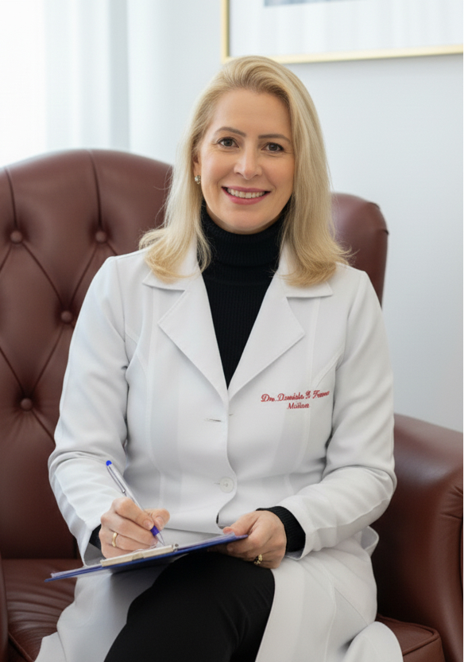
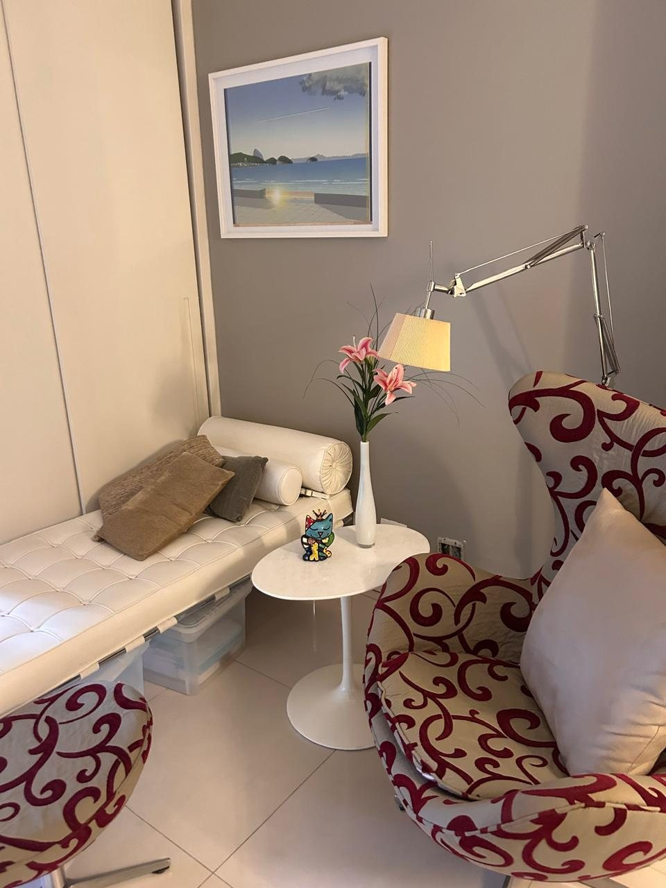
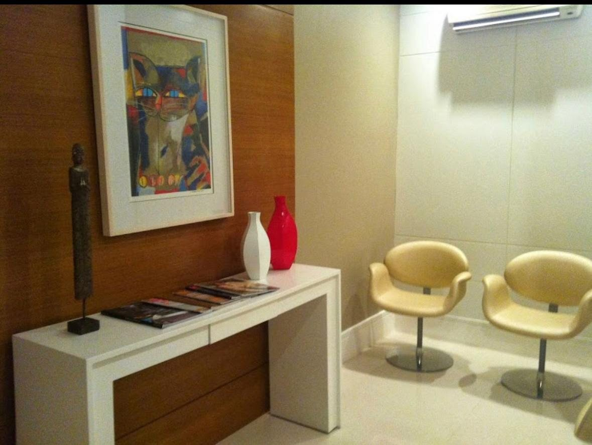
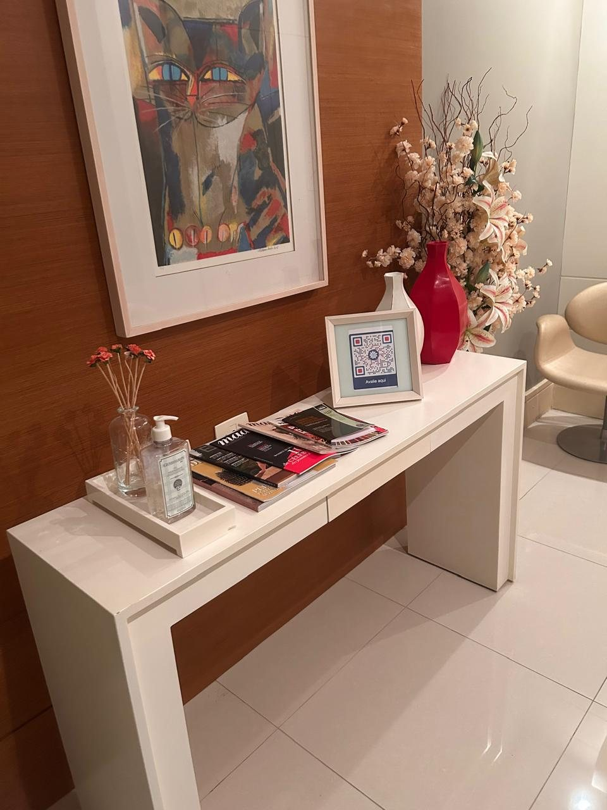

Psicoterapia e autoconhecimento
Um espaço para compreender a própria história, as relações e os padrões que se repetem.
Psiquiatria, psicoterapia e medicina do sono com ciência, escuta e sensibilidade. Consultas presenciais no Shopping Downtown, na Barra da Tijuca, ou por teleconsulta para todo o Brasil.
CRM 5259505-5 · RQE 40676 e 40677
Ansiedade, tristeza, insônia, estresse ou dificuldade de foco são sinais de que algo precisa de atenção. Buscar ajuda é compreender o que está por trás desses sintomas.
Minha atuação, no consultório na Barra da Tijuca e por teleconsulta, une psicoterapia, medicina do sono e uso ético do canabidiol, para que cada pessoa reencontre bem-estar, clareza e qualidade de vida.
Ansiedade, tristeza, insônia, estresse ou dificuldade de foco são sinais de que algo precisa de atenção. Buscar ajuda é o primeiro passo, e ele pode ser dado no consultório na Barra da Tijuca ou por teleconsulta.
Um espaço para compreender a própria história, as relações e os padrões que se repetem.
Manejo de angústia, fobias e crises, com mais serenidade e autoconfiança.
Acompanhamento para tristeza persistente, apatia e sobrecarga emocional.
Mais estabilidade interna e menos reações impulsivas ou desproporcionais.
Entender as causas emocionais e retomar o controle sobre os impulsos.
Estratégias para desatenção, esquecimento e dificuldade de concentração.
Canabidiol como recurso complementar, com base científica e critérios éticos.
Restaurar um descanso reparador, com mais disposição e concentração.


Sou Danielle Hassene, médica psiquiatra no Rio de Janeiro. Minha jornada começou na cardiologia, passou pelas UTIs e pela cardiologia intervencionista. Foi ali que aprendi a ouvir o corpo, os silêncios e os sinais mais sutis. Hoje, no consultório na Barra da Tijuca, uno ciência, ética e humanidade em cada consulta.
Minha jornada começou na cardiologia, passou pelas UTIs e pela cardiologia intervencionista. Foi ali que aprendi a ouvir o corpo, os silêncios e os sinais mais sutis.
Universidade Gama Filho
Hospital Silvestre · Rio de Janeiro
Instituto Dante Pazzanese · São Paulo
PUC-Rio
IPUB-UFRJ e títulos da ABP
Hoje: psiquiatria, psicoterapia, medicina do sono, medicina canabinoide e perícia no Tribunal de Justiça do RJ.
Dra Danielle é pra mim mais que uma Psiquiatra, a considero uma amiga em que posso confiar meus sentimentos, angústias e dúvidas. Paciente e preocupada em não só prescrever medicação mas procura entender a história de vida do seu paciente, infelizmente é coisa rara nós consultórios médicos. Uma pessoa acima de tudo humana. Meu muito obrigado!
Ver avaliação no GoogleDra Danielle é uma profissional de ouro! Eu fiz o agendamento a distância com intuito de ajudar um amigo com dificuldades e ele recebeu todo o acolhimento. A Doutora via mensagem entrou em contato comigo, sempre mantendo uma excelente comunicação e preocupação genuína. Eu recomendo a todos e todas que necessitem de uma profissional competente, qualificada e sobre tudo humana…
Ver avaliação no GoogleCheguei à Dra. Danielle depois de meses com insônia e ansiedade. Desde a primeira consulta me senti ouvida de verdade. Ela explica cada etapa do tratamento, sem pressa, e hoje durmo e vivo com muito mais tranquilidade.
Ver avaliação no GoogleProfissional extremamente competente e humana. Faço teleconsulta de outra cidade e o atendimento é tão cuidadoso quanto o presencial. Retornos pontuais, orientações claras. Recomendo sem reservas.
Ver avaliação no GoogleLevei meu pai, que resistia muito à ideia de procurar um psiquiatra. A Dra. Danielle o acolheu com uma delicadeza que mudou a visão dele sobre o tratamento. Hoje ele está muito melhor e vai às consultas por vontade própria.
Ver avaliação no GoogleConsultório silencioso e acolhedor, pontualidade e uma médica que realmente escuta. O tratamento para TDAH finalmente fez diferença na minha rotina de trabalho e nos meus relacionamentos.
Ver avaliação no GooglePela primeira vez um médico se interessou pela minha história, não só pelos sintomas. Trabalho sério, ético e baseado em ciência, com um cuidado humano que faz toda a diferença. Sou muito grata.
Ver avaliação no Google

No Shopping Downtown, com estacionamento e fácil acesso pela Av. das Américas. Luz suave, silêncio e poltronas que convidam a ficar: um espaço reservado, sem pressa e sem julgamentos, para você se sentir à vontade desde a chegada.
Shopping Downtown · Av. das Américas, 500, bloco 8, portaria F, sala 210 · Barra da Tijuca
Ver no mapa
Na Barra da Tijuca, Rio de Janeiro, dentro do Shopping Downtown: Av. das Américas, 500, bloco 8, portaria F, sala 210. Há estacionamento no shopping e fácil acesso pela Av. das Américas. Ver no mapa.
Se ansiedade, tristeza, insônia, irritabilidade ou dificuldade de foco duram semanas e atrapalham trabalho, relações ou descanso, vale uma avaliação. A primeira consulta serve para entender o que está acontecendo e decidir, junto com você, se há indicação de tratamento, psicoterapia ou apenas acompanhamento.
Sim. A teleconsulta em psiquiatria é regulamentada pelo CFM e permite iniciar ou continuar o tratamento com privacidade, de qualquer cidade do Brasil. A primeira consulta e os retornos podem ser presenciais na Barra da Tijuca ou online, conforme a sua preferência.
O atendimento é particular. Emitimos recibo e relatório para que você solicite reembolso ao seu plano de saúde, conforme as regras do seu contrato.
Não. Toda prescrição exige avaliação médica, presencial ou por teleconsulta. Pacientes em acompanhamento podem ter renovações combinadas dentro do plano terapêutico.
O agendamento é feito pelo WhatsApp. A consulta é confirmada na véspera. Remarcações e cancelamentos devem ser avisados com pelo menos 24 horas de antecedência para liberar o horário a outra pessoa.
Pensamentos de tirar a própria vida, risco de machucar a si ou a outros, confusão mental aguda ou crise após uso de substâncias pedem atendimento imediato. Procure a emergência mais próxima, ligue 188 (CVV) ou 192 (SAMU).
Sim. O canabidiol é avaliado como recurso complementar, com base científica e critérios éticos, sempre após consulta e dentro de um plano de tratamento individualizado.
Agende uma consulta presencial na Barra da Tijuca ou por teleconsulta.